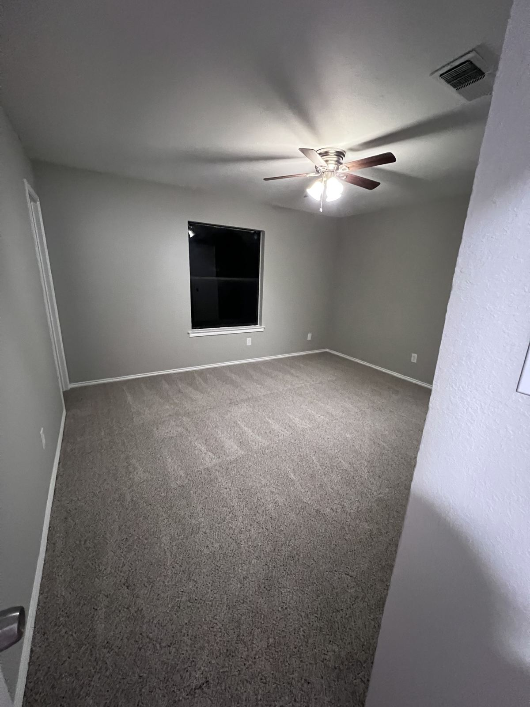

Airbnb & Short-Term Rental Cleaning in Dallas–Fort Worth
Reliable turnovers between guests anywhere in DFW, scheduled around your checkout and check-in times. Fresh bathrooms, a reset kitchen and a guest-ready home every time. See your price instantly and book online.
★★★★★ 5.0-star rated on Google · Background-checked team · English-speaking team · Locally owned, serving all of DFW · Open 7 days

Turnovers you don't have to worry about
Your reviews depend on what guests find when they open the door. A hair in the shower, crumbs under the couch or a smudged mirror can cost you a star, and a cleaner who doesn't show up can cost you a booking. We clean Airbnb, VRBO and other vacation rental properties all over Dallas–Fort Worth with one goal: every guest walks into a place that looks like your listing photos.
We're a locally owned Richardson company, close to your properties and easy to reach. Whether you host one short-term rental near UT Dallas or manage several units across Plano and Dallas, we'll fit turnovers around your booking calendar.
"Everything looked spotless, organized, and professionally handled. If you want someone you can trust to keep your space looking its best, Lindsey is the one. Highly recommend!" — M. Proctor
Your turnover cleaning checklist
Kitchen
- Countertops, backsplash and sink cleaned and sanitized
- Stovetop and appliance exteriors wiped
- Microwave wiped inside and out
- Cabinet fronts and handles wiped
- Trash emptied
Bathrooms
- Toilets, tubs and showers cleaned and sanitized
- Hair and soap scum removed from tubs, showers and glass
- Sinks, counters, mirrors and fixtures polished
- Floors cleaned
Bedrooms and living areas
- Reachable surfaces dusted
- Mirrors and glass tables cleaned
- Beds made
- Light tidy of surfaces
Floors throughout
- Carpets and rugs vacuumed
- Hard floors vacuumed and mopped
Ask us about: linen changes, restocking basics like toilet paper and hand soap, and report-back photos after each turnover. Just add them to your booking notes.
Between busy seasons, book a deep clean for the baseboards, blinds and grout that turnovers skip.
Built for hosts and property managers
- Hosts with one or two listings who are tired of racing over to clean between guests.
- Property managers running several units across DFW.
- Furnished and mid-term rentals that need a reset between longer stays.
- Pet-friendly listings that need extra attention to pet hair between guests. See our pet-friendly house cleaning.
Managing more than one property? Choose the Multiple Properties option in our booking tool to quote several units at once, or call (469) 210-8005 and we'll set up a simple way to book your turnovers.
How booking works
- See your price. Enter your property details in our instant quote and your price shows on screen.
- Share your schedule. Add your checkout and check-in times plus access instructions (lockbox, smart lock or entry code) to your booking notes. We schedule turnovers around your checkout and check-in times. Tight window? Ask about same-day turnovers.
- Pay after the clean. Payment is collected after the clean is complete, not at booking.
Cleaning a property on a set schedule? See our recurring plans. For a limited time, recurring clients get a reduced rate on every visit.
A local team you can count on
Every team member is background checked, we're 5.0-star rated on Google, and we're open seven days a week, 8:30 AM–7:30 PM, including the weekends when most checkouts happen. Our English-speaking cleaners make it easy to share access details, house rules and the little things that matter at each property.
"So easy to communicate with — every request I made was followed with questions, which showed me they care more than the average cleaner who may just sweep and leave." — Hyun C., Plano, TX (Yelp review)
Can you clean between a same-day checkout and check-in?
Tell us both times when you book and ask about same-day turnovers. We'll let you know what we can fit in.
Do you change linens or restock supplies?
Ask us. Add what you need to your booking notes or call, and we'll talk through what we can do.
Do I need to be there?
No. Most hosts give us a lockbox, smart lock or entry code. Just include it in your booking notes.
Are your cleaners English-speaking?
Yes. Our cleaners speak English, so it's easy to explain exactly what you want and get updates during your clean.
Get your next turnover on the calendar
See your price in about two minutes and book around your next checkout. Serving hosts all over Dallas–Fort Worth.
Call (469) 210-8005 · info@sotecleaning.com · Open Mon–Sun, 8:30 AM–7:30 PM
Nearby: Richardson · Plano · Garland · North Dallas · Murphy · Wylie · Sachse · Allen · Rowlett · All DFW service areas